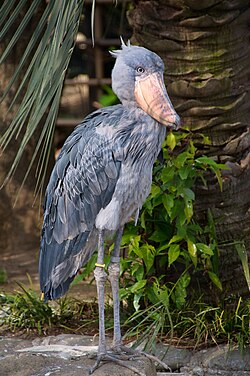
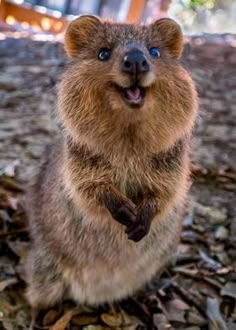

Interesting facts about Shoebills!
They can stand between 3.5 and 4.5 feet tall and weigh between 9 and 15.5 pounds.Shoebills have a long lifespan, living up to 25 years in the wild and 35 in captivity.The shoebill is considered a vulnerable species, primarily due to habitat loss caused by human activities like agriculture and pollution.
This is a shoebill.
Interesting facts about Axolotls!
Axolotls can live for 10 to 15 years in captivity.They have an extraordinary ability to regenerate lost limbs, spinal cords, and even parts of their heart and brain.They primarily breathe through their external gills and skin, but also have rudimentary lungs.Native to freshwater lakes in Mexico, they now primarily live in the canals of Xochimilco.Axolotls are critically endangered in the wild due to pollution and habitat loss in their native Lake Xochimilco, Mexico.
This is an Axolotel.
Interesting facts about Quokka's!>
They weigh between 2.5 and 5 kg and measuring about 40 to 54 cm in body length.They are primarily nocturnal, resting in dense vegetation during the day and foraging at night.They are able to chew their food twice, similar to cows, to maximize nutrient absorption.Their tail stores fat for times of scarcity.Quokkas are listed as a vulnerable species due to threats like habitat loss and predators like foxes and cats.